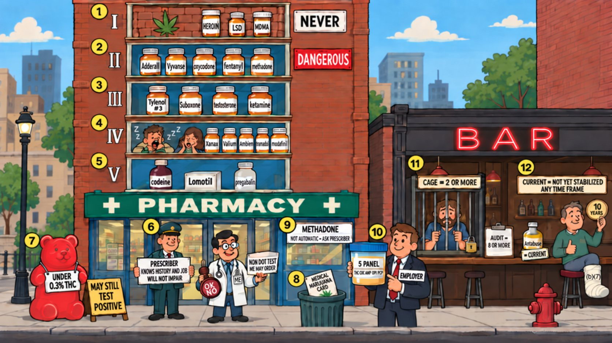

Card 12 of 13 · 49 CFR 391.41(b)(12), (b)(13)
The Five-Story Pharmacy
Drugs and alcohol — DEA schedules, the prescription exception, marijuana and CBD, methadone, DOT testing, CAGE and AUDIT.

0:00 / 0:00
Press play — the narrator walks the scene and the spotlight follows to each numbered object. Click any paragraph to jump there. Space play/pause · ←/→ previous/next object · [/] previous/next card.
What this card covers
Drugs and alcohol — DEA schedules, the prescription exception, marijuana and CBD, methadone, DOT testing, CAGE and AUDIT. Standard: 49 CFR 391.41(b)(12), (b)(13).
The hooks to keep
- Schedule I is never; II is dangerous
- The prescriber must know the history and the job — Doc holds the stamp
- CBD may still test positive
- Methadone is not automatic
- The 5-panel is the employer's; the non-DOT test is yours
- CAGE two or more, AUDIT eight or more, Antabuse means current
Test yourself
10 questions on this card
Answer each question to see the explanation, its sources, and the cheat-sheet entry.